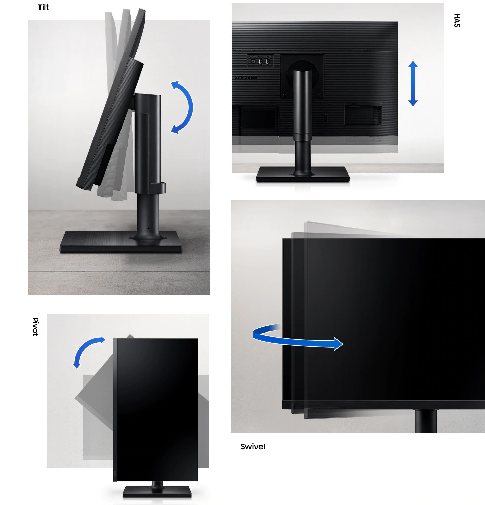

Configurarea monitorului pentru o muncă confortabilă
Designul ergonomic al monitorului vă permite să utilizați ecranul confortabil. Reglați înălțimea afișajului de pe suport sau rotiți-l vertical și orizontal. Rame subțiri și design elegant fac din acest monitor un element armonios al locului dvs. de muncă. În plus, modelul este compatibil cu montarea pe perete VESA, astfel încât să puteți monta monitorul LED pe perete.
